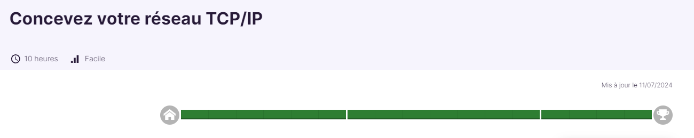
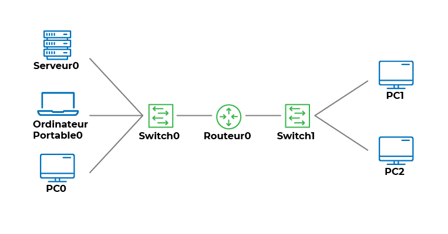

Dans cette formation, j'ai appris à utiliser le protocole TCP/IP, qui est à la base de toutes les communications sur les réseaux informatiques et essentiel pour assurer l'interconnexion des systèmes.
Formation OpenClassRoomsLien internet : https://openclassrooms.com/fr/courses/6944606-concevez-votre-reseau-tcp-ip.

Mes objectifs
 Créez l’architecture physique de votre réseau
Créez l’architecture physique de votre réseau- Configurez votre réseau pour assurer la communication
- Optimisez votre réseau en ajoutant des services
- Consevoir un reseau TCP/IP
Pourquoi cette formation ?
- -Prendre du savoir et du savoir-faire en liaison avec ma formation en BTS SIO
- -Me servir lors de mon stage où au BTS
- -Compétences qui me serviront dans mon futur professionnel
- -Comprendre les bases de l’administration réseau pour mieux gérer des infrastructures complexes
- -Savoir configurer et sécuriser un réseau local et étendu
- -Apprendre à travailler avec des outils et technologies actuels (switches, routeurs, VLANs, etc.)
- -Se préparer aux certifications professionnelles liées aux réseaux (comme Cisco CCNA, etc.)
Les outils que j'ai utilisé
- -Navigateur WEB
- -Cisco Packet Tracer
Quelques notions à travers des images
Communication réseau avec TCP/IPLe protocole TCP/IP est la base de toutes les communications sur les réseaux informatiques. Il permet d’assurer l’interconnexion entre différents équipements tels que les ordinateurs, les serveurs et les périphériques réseau (switches, routeurs, etc.).
Dans une architecture réseau comme celle illustrée, TCP/IP joue un rôle central en permettant :
-La transmission des données entre les équipements (par exemple, entre le serveur et les postes clients).
-La segmentation et la gestion des données pour une communication fiable.
-L’identification des appareils grâce à leurs adresses IP uniques.
Cette architecture se compose d’un serveur, d’un routeur, de switches, et de plusieurs postes clients. Le protocole TCP/IP assure la communication entre tous ces appareils en définissant les règles nécessaires pour envoyer et recevoir des paquets de données efficacement.
Ainsi, la maîtrise de TCP/IP est essentielle pour concevoir, configurer et optimiser un réseau informatique capable de répondre aux besoins d’une organisation.

Le modèle OSI et le modèle TCP/IP sont deux références fondamentales dans le domaine des réseaux.
Avantages du modèle TCP/IP :-
-Il simplifie la communication en regroupant certaines couches du modèle OSI, comme les couches Application, Présentation et Session, en une seule couche Application.
-Il est universellement utilisé et standardisé, permettant ainsi l’interopérabilité entre différents appareils et systèmes.
-Grâce au protocole TCP, il offre une transmission fiable des données, assurant que les informations envoyées arrivent intactes à destination.
-Il est flexible et peut s'adapter à différents types de matériels et de réseaux.
-
-Ce modèle divise les processus de communication en sept couches distinctes, rendant le dépannage et l’analyse des réseaux plus simples.
-Bien qu’il ne soit pas directement utilisé en pratique, il constitue une base théorique idéale pour apprendre et comprendre les réseaux.
-Chaque couche ayant un rôle spécifique, il favorise une approche modulaire de la conception des systèmes réseau.
Le modèle OSI est souvent utilisé pour l’enseignement des concepts réseau, tandis que le modèle TCP/IP s’applique directement à la communication sur Internet.

Dans un réseau utilisant le protocole TCP/IP, les cartes réseau jouent un rôle fondamental pour assurer la communication entre les appareils. Cette image illustre différents types de cartes réseau, leurs ports associés, leurs supports de transmission, et les normes générales qui les régissent.
Cartes réseau en cuivre :-
-Utilisent un port RJ45.
-S’appuient sur des câbles en cuivre à paire torsadée pour transmettre les données.
-Norme : IEEE 802.3 (Ethernet), très répandue dans les réseaux locaux (LAN).
-
-Connectées via des ports spécifiques comme GBIC, SFP, SFP+, ou XFP.
-Transmettent les données sur des fibres optiques, offrant une grande vitesse et une longue portée.
-Norme : IEEE 802.3 (Ethernet), principalement utilisée dans les infrastructures backbone ou pour interconnecter des équipements à grande distance.
-
-Ne nécessitent aucun port physique.
-Transmettent les données via les ondes radio dans l'air.
-Norme : IEEE 802.11 (WLAN), utilisée pour les réseaux locaux sans fil.
Ces différentes technologies permettent d'adapter la communication réseau aux besoins spécifiques en termes de vitesse, distance, et environnement. Le protocole TCP/IP fonctionne indépendamment du type de carte ou de support, assurant une compatibilité universelle entre les équipements.